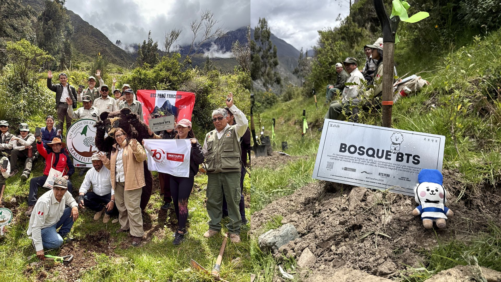

El comienzo
Hace apenas unas décadas, era difícil imaginar que millones de personas alrededor del mundo escucharían música en coreano. Durante mucho tiempo, la industria musical internacional estuvo dominada por artistas occidentales y canciones en inglés. Sin embargo, el K-pop logró romper ese esquema. Gracias a una combinación de música, coreografías, producción audiovisual y el uso estratégico de las redes sociales, Corea del Sur consiguió exportar su cultura a todos los continentes. Lo más sorprendente es que el éxito del K-pop no dependió de que los artistas abandonaran su idioma o adaptaran completamente su identidad cultural. Por el contrario, gran parte de su atractivo radica precisamente en mostrar elementos de la cultura coreana al mundo. Este fenómeno, conocido como la "Ola Coreana" o Hallyu, ha convertido a Corea del Sur en una de las mayores potencias culturales del siglo XXI.
BTS el grupo que cambió las reglas del juego
Entre todos los grupos que forman parte del K-pop, BTS ocupa un lugar especial. Debutaron en 2013 bajo una empresa relativamente pequeña y, a diferencia de otros artistas que contaban con grandes recursos desde el inicio, tuvieron que construir su camino paso a paso. Su historia resulta inspiradora porque demuestra que el éxito no siempre depende de los recursos disponibles, sino también de la perseverancia y la capacidad de conectar con las personas. Lo que comenzó como el sueño de siete jóvenes terminó convirtiéndose en un fenómeno global capaz de llenar estadios en distintos continentes y atraer la atención de líderes, organizaciones internacionales y medios de comunicación de todo el mundo. BTS no solo rompió récords musicales. También ayudó a derribar la idea de que el idioma era una barrera para el éxito internacional. Millones de personas comenzaron a escuchar canciones en coreano, demostrando que las emociones pueden entenderse incluso cuando no se comprende cada palabra.
Impactos positivos

Amor propio y bienestar emocional
BTS se destacó por transmitir mensajes sobre autoestima, aceptación personal y salud mental. A través de álbumes como Love Yourself y discursos dirigidos a jóvenes y adultos de todo el mundo, el grupo alentó a millones de personas a valorarse, expresar sus emociones y perseguir sus sueños sin miedo al fracaso.
Impacto social más allá de la música
La influencia de BTS trasciende los escenarios. El grupo colaboró con UNICEF en la campaña Love Myself y participó en eventos de la ONU promoviendo el respeto y la confianza en uno mismo. Además, algunos de sus integrantes han apoyado proyectos educativos y sociales, como la participación de Min YoonGi como coautorde un manual clínico de terapia musical para niños y adolescentes con Trastorno del Espectro Autista.

Un fandom que genera cambios
ARMY, el fandom de BTS, ha demostrado que ser fan va mucho más allá de escuchar música. En distintos países han organizado donaciones, campañas solidarias, ayuda en emergencias y proyectos ambientales, incluyendo plantaciones de árboles y apoyo a comunidades vulnerables. Su capacidad de movilización ha convertido a la comunidad en una fuerza positiva con impacto real en la sociedad.
Los desafíos del fenómeno BTS
Aunque BTS ha tenido un impacto positivo, también ha abierto debates sobre la presión de la industria del entretenimiento, la privacidad de los artistas y la idealización de las celebridades.
El éxito mundial implica largas jornadas de trabajo, constantes viajes y una gran exposición pública. Esto ha llevado a reflexionar sobre la importancia de proteger la salud física y emocional de los artistas.
Canciones que dejaron huella
- "Spring Day" Habla de la ausencia, la esperanza y el reencuentro.
- "Answer: Love Myself" Promueve la aceptación personal.
- "Magic Shop" Invita a encontrar consuelo en los momentos difíciles.
- "Silver Spoon" Reflexiona sobre la presión social y la sensación de competir en condiciones injustas.
- "Mikrokosmos" Destaca que cada persona brilla a su manera.
Conclusión
BTS demostró que la música puede superar las barreras del idioma y unir personas de diferentes culturas. Su legado no solo se encuentra en los escenarios, sino también en el impacto social y cultural que han generado alrededor del mundo.
¡Descubre una canción de BTS!
Presioná el botón para escuchar una canción aleatoria.